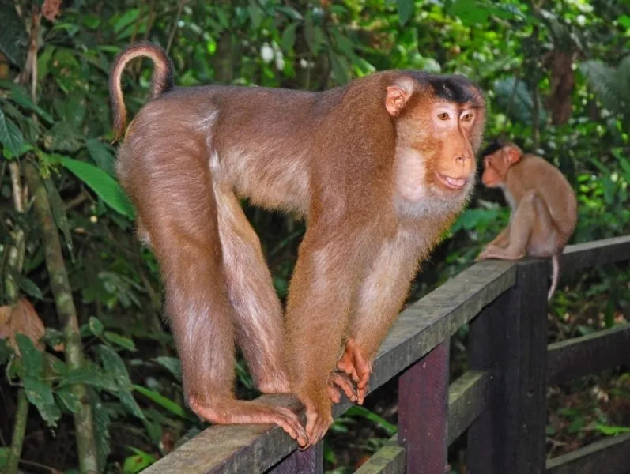

哺乳动物 · 动物界
豚尾猴 Macaca nemestrina

因短尾上翘、形似猪尾而得名的猕猴，体格健壮，头顶毛短而平，分布于东南亚热带雨林，在中国云南南部边缘有少量种群。
- 分类
- 门脊索动物门纲哺乳纲目灵长目科猴科属猕猴属
- 栖息环境
- 热带雨林、季雨林、次生林与红树林边缘
- 地理分布
- 泰国、马来西亚、印度尼西亚苏门答腊、缅甸及中国云南南部
- 保护级别
- IUCN 濒危（EN）；中国国家一级保护动物
物种志
豚尾猴体形粗壮，四肢有力，成年雄性体长约 50–60 厘米，体重 10–14 千克，雌性略小。最醒目的特征是尾巴：尾长仅 15–20 厘米，常向上弯曲如弓，末端细而裸露，形似猪尾，因此得名“豚尾猴”；头顶毛短而平贴，形成平坦的“帽状”轮廓，故又称平顶猴。背部毛色呈橄榄褐或灰褐色，腹面浅黄，面部裸露呈暗肉色。
它们栖息于热带雨林、季雨林和红树林边缘，多在树冠层活动，也常下到地面觅食，食性很杂，包括果实、种子、嫩叶、昆虫、鸟卵和小型脊椎动物。猴群由十几只至数十只组成，雌性留在出生群中，雄性长大后外迁。豚尾猴性格较为强势，常进入农地取食，与人类冲突较多。孕期约 170 天，每胎一仔。
形态与习性
- 体长雄性约 50–60 cm，雌性约 45–55 cm
- 体重雄性约 10–14 kg，雌性约 5–8 kg
- 尾长约 15–20 cm，常上翘呈猪尾状
- 食性果实、种子、嫩叶、昆虫、鸟卵及小型脊椎动物
- 繁殖全年可繁殖，孕期约 170 天，每胎一仔
- 寿命野外约 20 年，饲养下可达 30 年
- 种群现状中国境内种群数量稀少，仅云南南部有零星记录
趣味知识
- 豚尾猴的尾巴短而向上卷曲，末端裸露，远看确实像一条猪尾巴。
- 头顶的短毛贴合成平坦的帽状，是它区别于其他猕猴的显著标志。
- 它们会翻动落叶层寻找昆虫，也会跟着果季在森林中长距离迁移。